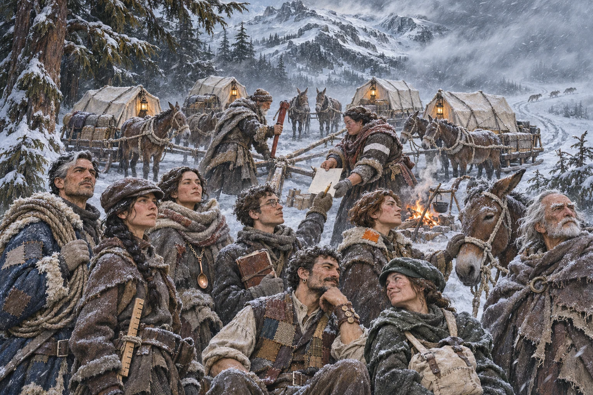
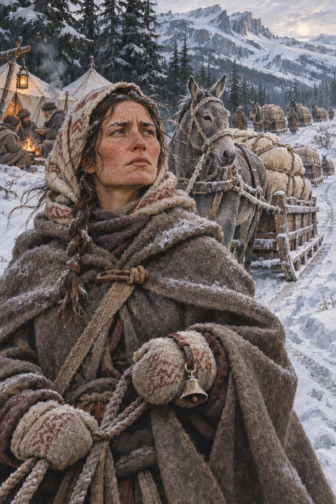
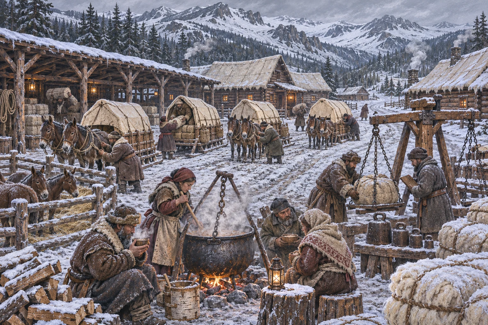
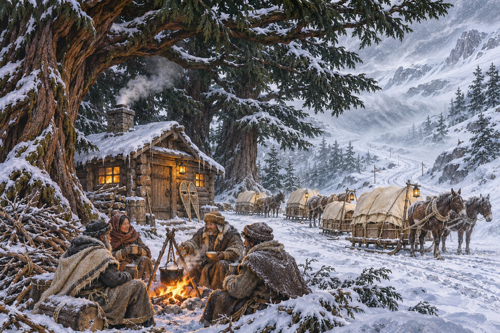
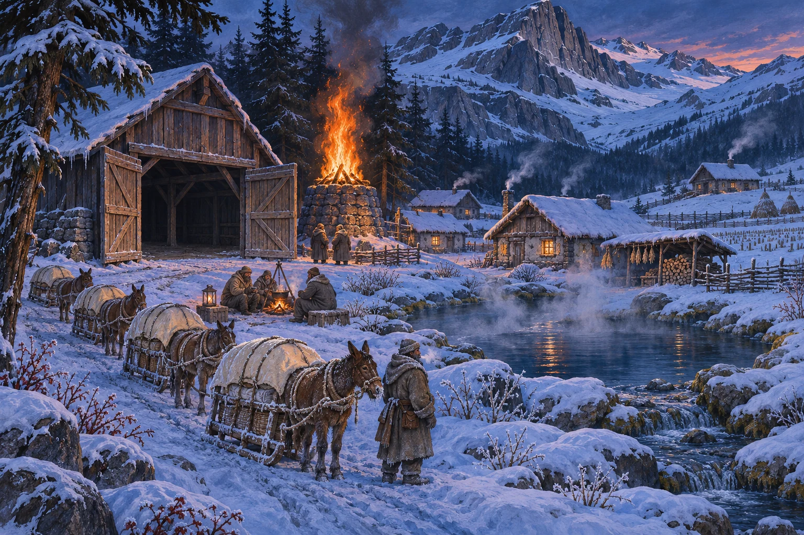
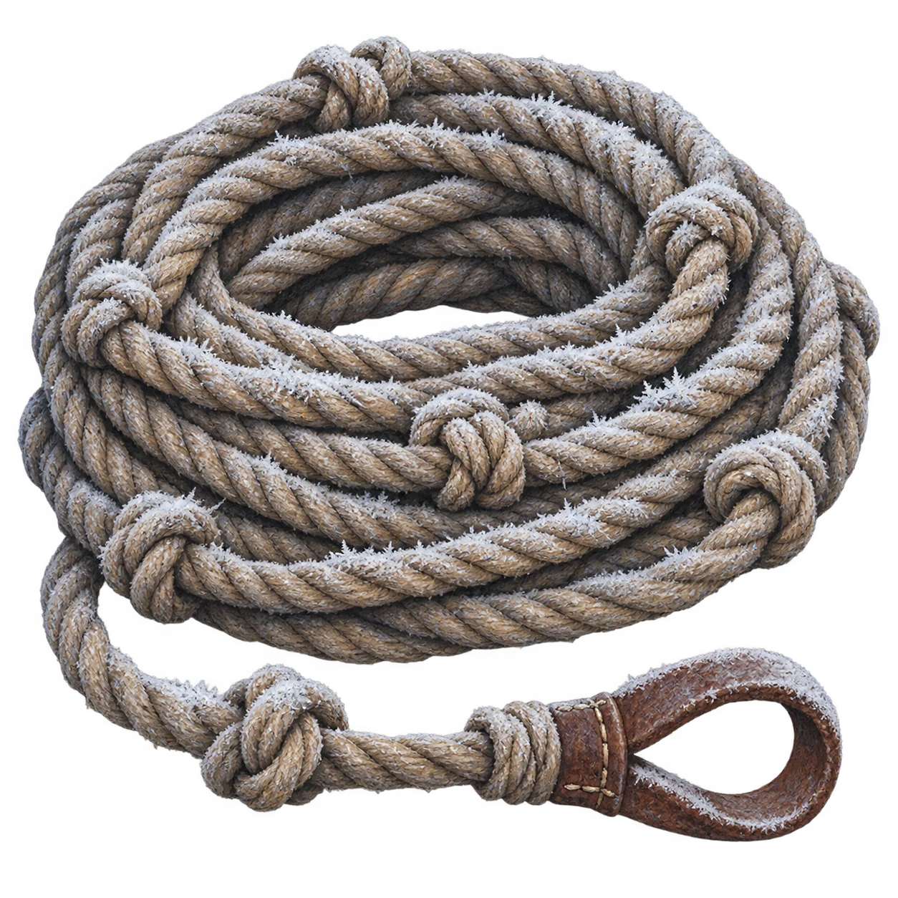
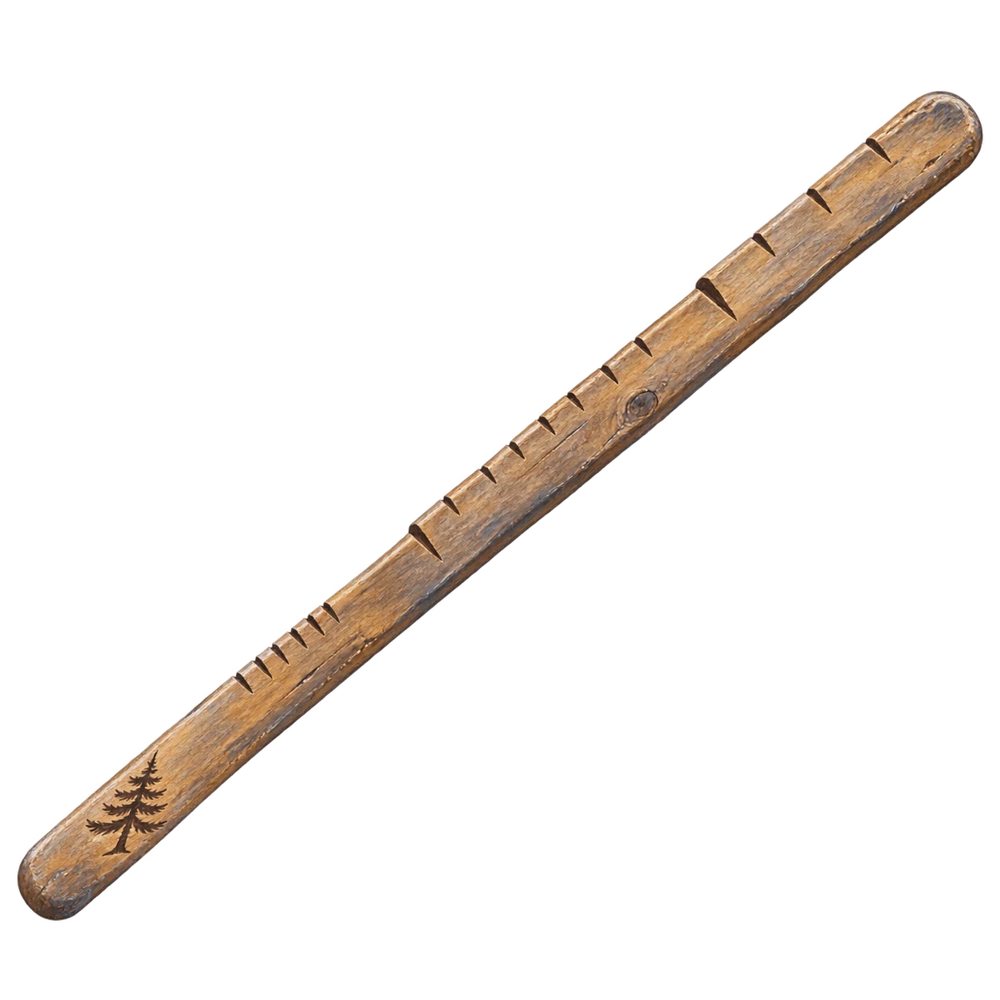
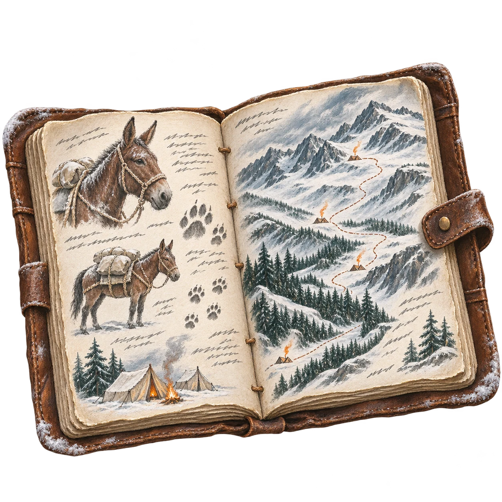

Вечер 1
Буран на подъёме
Поставить обоз в круг в буране, вернуть отставшие сани и оплатить с листа первую ночь.
Открыть сценарий →
Через час после выхода буран ставит обоз «Белая Ночь» в круг на первом подъёме. Четверо саней семенного зерна, шерсти и припасов должны перейти Инейский хребет, а у вас лист: четырнадцать мешков еды, шесть вязанок дров и семь ночёвок до перевала. Каждую ночь вы платите карандашом. За обозом идёт волчья стая — не так, как ходят волки. Последний подъём к перевалу вы пройдёте бегом — и узнаете, сколько людей дошло до Южной Лощины.
8 сессий по Около трёх часов: три сцены по 50 минут и перерыв 15 минут; в последний вечер сцены 45, 75 и 30 минут; обсуждение границ перед первым вечером. Подготовленные герои — уровень 3. Прочитайте первую сессию, выберите состав и передайте игрокам отдельную страницу героев.
В мастерской создайте или откройте свой черновик, выберите импорт пакета и укажите package.json либо нужный файл из variants. Проверьте сценарий и состав в предпросмотре; активацию подтверждает ведущий. Сюжетные развилки, часы давления и жанровые действия разрешаются ведущим — они не становятся автоматически сыгранными событиями.
Пакеты разных размеров используют первые N героев в порядке карточек. Дополнительные герои дают новые роли, но не обязательные ключи к истории. Выбор произвольного состава требует правки черновика и повторной проверки.
Скрип полозьев, иней на постромках, цепочки следов на насте. Усталые люди считают мешки и вязанки и всё равно отдают последнюю долю тому, кто слабее. Тишина перед карнизом. Страх — от холода, темноты за кругом саней и белого силуэта на гребне, а не от подробностей ран.
Поставить обоз в круг в буране, вернуть отставшие сани и оплатить с листа первую ночь.
Открыть сценарий →Перейти брод, не потеряв мешков, увидеть, что стая хочет мимо, и пополнить лист у Ошвена.
Открыть сценарий →Пройти Скальную Полку под нагруженным карнизом, пережить лавину и откопать Вавилу до темноты.
Открыть сценарий →Откопать Кухонные сани, вынести мешки из шурфа под носом у стаи и решить, что бросить на Полке.
Открыть сценарий →Прочитать по следам в Трёх Чашах, что гонит стаю, пополнить лист и пережить ночь у озера.
Открыть сценарий →Дойти до зимовья, отработать у Явры дрова и еду, узнать о карнизе над Желобом и решить, кто идёт дальше.
Открыть сценарий →Подняться от зимовья к Последней Площадке под стаей, решить, что везти через Желоб, и заполнить карту бега.
Открыть сценарий →Отбить мулов у Белой, пробежать Белый Желоб до схода и довести до огня Порога столько людей, сколько сможете.
Открыть сценарий →
Крупная женщина с белой полосой на рукаве и мелом, которым она подписывает каждый ящик.
Распорядительница каравана «Белая Ночь»: ведёт обоз и отвечает за груз перед Алдой Шорн, приёмщицей Южной Лощины.
Довести людей и четыре ящика семян — весну девяти хозяйств Лощины.
Задержала выход на два дня, дожидаясь у покупщика второго тюка шерсти, хотя Херет Валл говорил, что погода повернёт. Буран первого дня — цена этих двух дней, и она это знает.
Не приказывает никому остаться на склоне и не прячет мешков. Назад не уходит: груз и люди на ней.
Признаётся в задержке, когда при ней буран называют невезением или когда считают, каких ночей не хватило: «Два дня я ждала тюк. Два дня. Херет говорил. Пиши и это».

Седые виски, кожаный передник поверх полушубка и смех, похожий на короткий кашель.
Мастер полозьев: сама гнула полозья Новых и Кухонных саней и ведёт Новые сани.
Чтобы сани работали, пока помогают, и были брошены, как только мешают; довести Новые сани — её лучшие полозья.
Кухонные сани — её новая работа с длинными полозьями, и она не уверена, как они пойдут в гору по рыхлому. Она из тех, кто винит себя за каждую поломку саней раньше, чем разберётся, и молчит об этом.
Не говорит, что сани пройдут, если они не пройдут.
О длинных полозьях говорит, когда в шурфе видят Кухонные сани целыми, а рядом — чужой лаз: «Это мои полозья. Длинные. Я думала — легче пойдут».

Рыжий платок, закопчённый котелок у пояса и несколько деревянных ложек разной длины.
Повар обоза: ведёт котёл и мешки на Кухонных санях.
Чтобы никто не голодал тайком и паёк решали вслух.
С первой ночи ест полпорции и отдаёт остальное возчикам; поэтому быстро слабеет. Это голод и усталость, а не болезнь.
Не урезает чужую долю тайком и не соглашается морить одного ради всех. Назад не уходит: котёл без неё не сварит.
Признаётся, что ест полпорции, когда ей предлагают конкретную смену у котла, а не спрашивают при всех. До этого на вопрос отвечает: «Ешь. Я поела. Честно».

Высокий человек с короткой бородой и красным суконным чехлом на дорожном шесте.
Обходчик Кедровой Кромки, нанят проводником до зимовья Шерстяная Стена и дальше.
Довести обоз и до глубокой зимы вернуться в свою избушку на Кромке.
Двадцать три года назад вёл людей через Скальную Полку после полудня, и обычная лавина унесла его напарника, молодого обходчика. С тех пор он не берёт Полку после полудня и не говорит почему.
Отделяет то, что видел, от того, что думает. Назад не уходит: обещал довести.
О напарнике рассказывает на Полке, если спросить, почему он не хочет идти после полудня.

Круглое лицо, чёрная меховая шапка и берестяная книга за пазухой.
Хозяин Дымного Разъезда — амбар, брод, дрова, ночлег под крышей. Ведёт «волчью книгу»: одиннадцать зим считает стаю Трёх Чаш.
Продать мешки за шерсть и отправить племянника Малкена на юг до весны.
Десять дней назад с гребня над Разъездом видел белого зверя ростом с телёнка, который шёл шагом позади стаи. Никому не сказал: Разъезд живёт обозами, рассказ о белом звере закроет дорогу. Спит с топором. Написал письмо Алде и отдал Малкену: «Белый зверь над Разъездом, ростом с телёнка. Стая бежит от него. Держите обозы до весны».
Не отдаёт последнее даром и не врёт про книгу.
На прямой вопрос «что гонит стаю?» отвечает «Не знаю. Не хочу знать» и уводит глаза — это видно без броска. Правду говорит только письмо, если герои его прочтут.

Узкое лицо, длинные ресницы в инее, шерстяной пояс, завязанный на боку, и лямки лёгкой нарты через плечо.
Племянник Ошвена, бегун с лёгкой нартой; хочет идти с обозом наниматься в Южную Лощину.
Уйти с Разъезда и больше не подниматься на хребет.
С двенадцати лет боится волков — его покусали. В стычке замирает и скрывает это.
Назад не уходит: дядя велел дойти.
О страхе говорит, если после стычки кто-то спокойно скажет, что и сам боялся: «Я не стою. Я… просто считаю, сколько их».

Широкие плечи, серебряные брови и фартук с карманом для берестяных записей.
Хозяйка зимовья Шерстяная Стена; каждое утро ставит зарубку снега на дверном косяке и пишет на бересте.
Принять обоз и сохранить запас зимовья для следующего застигнутого.
Сорок зим назад видела, как Белая обрушила карниз над Желобом на сани её отца. Путникам не рассказывает: над ней смеялись. Считает, что в белые зимы Белая возвращается.
Не гонит людей в Желоб и не держит их у себя против воли.
Рассказывает про Белую и даёт факелы, если ей рассказать про загнанную стаю или показать следы Белой — рисунок в тетради Севара или мерку Кеи с замером.

Тёмный войлочный жилет, красные от ветра щёки и связка обычных амбарных ключей.
Приёмщица зимних грузов Южной Лощины; встречает зимние обозы у Южного Порога с сигнальным огнём.
Зерно для девяти хозяйств — и людей живыми.
Обещала хозяйствам, что обоз придёт, и боится, что пообещала за чужие жизни. Без зерна половина полей Лощины не будет засеяна.
Не спрашивает, кто виноват, пока не сосчитает живых.
Об обещании хозяйствам говорит, когда видит, сколько ящиков донесли: «Ящик — это два поля. Человек — это человек. Сначала люди».

Плотный возчик в тулупе, подпоясанном старыми вожжами; усы в инее, на шее платок.
Возчик Кухонных саней, правит мулом Пшено; шутит про котёл.
Дойти до Южной Лощины, где живёт его взрослая дочь, и отдать ей шерстяной платок из своего мешка.
Любит обгонять и спорить на сухари и стыдится этого. Поспорив, он может вывести сани на любую колею, лишь бы обогнать, — и потом молчит, если из этого выходит беда.
Не берёт чужую долю.
О споре и внешней колее рассказывает, когда его откапывают или когда Тарма винит свои полозья: «Это я. Я вывел наружу. Обогнать хотел».

Худая, в длинном войлочном плаще; на рукавице колокольчик, который звенит при каждом шаге Дымки.
Возчица Шерстяных саней, правит мулом Дымкой; нанялась за плату.
Вернуться к мужу в Войлочный Двор живой.
Обещала мужу повернуть назад, если «волки пойдут за обозом».
Не уходит, не сказав.
Об обещании говорит, когда в первый раз просит отпустить её назад: «Я мужу обещала. Если волки за нами — назад».

Лесные долины поднимаются к каменным рёбрам и снежным желобам. Зимой день короткий, ветер с перевала меняет снег за час. Тракт соединяет Войлочный Двор на севере и Южную Лощину на юге через перевал Белой Ночи.

Северный дорожный посёлок с навесами для саней, весами и общим котлом. Отсюда караван «Белая Ночь» вышел на два дня позже срока.

Широкая поляна под старыми кедрами у первого подъёма. В буран кедры держат ветер; сухой хворост лежит под нижними ветвями. Здесь избушка обходчика Херета.

Три дома, амбар и навес на южном берегу, у каменного брода. Река подо льдом шумит у северного берега. Хозяин Ошвен Иль продаёт мешки и дрова и пускает под крышу.

Дорога прижата к скале, над ней висит снежный карниз, внизу обрыв. Небольшие площадки у скалы, под навесом камня можно переночевать.

Три горные котловины: Нижняя с ручьём, Средняя с замёрзшим озером, Верхняя под каменной спиной. Между ними — каменные гребни и тропа обходчиков к туру.

Низкое зимовье с загоном, поленницей и большой печью. Войлок на стене в рисунках прежних постояльцев. На дверном косяке — зарубки хозяйки. С порога виден Белый Желоб и гребень над ним.

Ровная каменная терраса под Мореной, последняя стоянка перед перевалом. Снизу к ней тянется тропа от зимовья; вверх уходит широкая Морена к Белому Желобу. Ветер здесь тише, но костёр виден со всех гребней.

Морена, над ней Белый Желоб — широкий снежный жёлоб под карнизом восточного гребня; напротив карниза — каменный Отрог. Желоб выводит к Горлу — каменным воротам седловины. За Горлом Южный скат спускается к первым елям.

Хозяйства у незамерзающего ключа. У Южного Порога — первых елей под скатом — горит сигнальный огонь. В амбаре пусто: ждут зимнюю доставку.

Бухта пеньковой верёвки в сорок шагов, узлы через каждые три шага, кожаная петля на конце. В морозе натянутая верёвка звенит, как струна.
Вечер 1: верёвочная цепь от саней к саням — Глафиру с Шерстяными санями находят без броска и без маяка (Тепло не тратится, но это долго). Вечер 3: цепь копальщиков — Вавилу откапывают до темноты без обморожения, и круг при этом охраняется. Бег: сани на Горле спускают без потери хода. У каждой сцены есть путь и без верёвки.

Деревянная мерка в локоть с зарубками: ширина лапы, длина шага, глубина снега. На торце выжжена лиственница.
Без броска отличает след волка (четыре пальца) от следа шире: `crown-tracks`, `tracks-on-tracks`, `frost-deer`; на рассвете вечера 1 показывает шаг вскачь (`straight-trail`). Мерка с замером, показанная Явре в вечер 6, — путь к её рассказу о Белой и к факелам без броска.

Медная ложка на цепочке, отполированная до блеска. Ею Ольма отмеряет кашу в каждую миску, и по стуку о край все знают, что ужин начался.
Один раз за кампанию полпайка, отмеренный этой ложкой, не даёт Слабости: Еда −1, отметина «П» не ставится, завтра без помехи. Ведущий отмечает на листе, что ложка использована.

Тетрадь в кожаном чехле: схема перегонов, числа листа по ночам, зарисовки следов. На полях — мулы, нарисованные Леврином.
Из неё раздатка `route-sketch`. Вечер 4: Севар рисует следы с линии отрыва (`crown-tracks`); рисунок, показанный Явре в вечер 6, открывает её рассказ и факелы без броска. Вечер 5: сводит две цепочки (`tracks-on-tracks`). Бег: на обороте рисуют карту бега и связки.

Короткий изогнутый нож в деревянных ножнах на поясе. Режет обледеневшую постромку одним движением.
Вечер 2: если мул рвётся к тонкому льду у южного берега, а Тирна рядом, она режет вьюк — мешки остаются на льду, Еда не теряется. Бег, один раз: при укусе «мул рвётся» в её участке Тирна режет вьюк — мул остаётся, вьюк падает в снег и остаётся в участке.

Шнурок с двадцатью резными пуговицами — по одной за каждый обмен Леврина на хребте. Костяные, деревянные, одна медная.
Обмен тюка шерсти у Ошвена (вечер 2) — без броска по цене листа: Еда +3, Тепло +1. У Явры (вечер 6) — тоже без броска: Еда +3. Ошвен уважает счёт: «Леврин честно меняет». Без счёта обмен идёт через Убеждение СЛ 12.

Коровий рог в медной оправе на кожаном ремне, мундштук стёрт губами. Ошвен вешает его на нарту Малкена: «Три раза за перевалом. Не раньше».
Бег: трубят только на участках 8–12, за Горлом; со следующего хода на участках 9–11 стоят люди Лощины и ведут несомых и ослабевших (те идут по 2). Рог никогда не шум и карниз не роняет. В другие вечера — сигнал сбора в буране, без правил.

Лёгкая нарта на широких полозьях, с войлочной подстилкой и лямками на двоих. Полозья подбиты берёзой, на передке вырезано «М».
Приходит с Малкеном в вечер 2. Два места; тянут двое; в Желобе идёт как пеший (по 2 за ход). В вечера 3–7 везёт обмороженного без мула. В беге — способ везти одного несомого или два места груза быстро.

Большой медный котёл с закопчённым дном и двумя ушами для шеста. Сельда чистит его снегом каждое утро.
Уходит под лавину с Кухонными санями в вечер 3; в шурфе вечера 4 находится всегда, до боя. «Ящик в котёл» — только утром при Еде 0–2: с котлом Еда +3, без котла +2; каждый сваренный ящик пишут на листе. В беге — груз в одно место; обычно остаётся на Площадке.

Два смоляных факела на берёзовых рукоятях, обмотанные просмолённой паклей. Пахнут дёгтем даже на морозе.
Явра даёт их, когда ей рассказали про загнанную стаю или показали следы Белой (рисунок Севара, мерка Кеи). Каждый факел — один огонь вне листа: в хвосте, на Отроге (если Явра о нём рассказала) или над завалом; можно сжечь и на подъёме вечера 7. На карте бега их пишут в строку «Огня» вместе с вязанками.


Условия: Исход решают люди, потерянные в беге: отрезанные завалом, оставшиеся на склоне и забранные Белой. «Вся упряжь» — в беге не потерян никто: все, кто был на Последней Площадке на рассвете дня 8, герои и NPC, стоят у огня Южного Порога. Ушедшие назад и оставшиеся у Явры до вечера 8 исход не меняют — их называют у огня и показывают в последнем образе.
Алда Шорн идёт вдоль цепочки людей с факелом и считает вслух, сбиваясь на каждом десятке; считает ещё раз — сходится. Тех, кто ушёл назад или остался у Явры, называют по имени. Мешки и ящики, которые донесли, ставят в пустой амбар, и Алда ладонью стирает с крышки иней. Внизу, в Лощине, зажигаются окна. Последний образ: с Порога видно перевал в сумерках, далеко внизу — дымок над зимовьем Явры; на Последней Площадке и в Желобе под снегом лежит то, что оставили, — белые горбы под инеем, на колее обрывается след полозьев; на гребне над Желобом, против неба, белый силуэт идёт шагом к своей норе.
Цена: На склоне остались сани, что не прошли, груз, который не донесли, и мулы, ушедшие со стаей или с Белой. Лощина засеет столько полей, сколько ящиков стоит в амбаре.
Условия: В беге потеряны один или двое людей обоза: отрезанные завалом, оставшиеся на склоне или забранные Белой. Ушедшие назад и оставшиеся у Явры до вечера 8 исход не меняют — их называют у огня и показывают в последнем образе.
Алда считает людей, и все смотрят на гребень, а не на неё. Тех, кто не дошёл, называют по имени, вслух, у огня, — и тех, кто ушёл назад раньше. Ящики и мешки ставят в амбар; Алда не спрашивает, сколько стоит каждый. Последний образ: в сумерках на Желобе — свежий язык завала с торчащим полозом или пустая Площадка внизу, где следы тех, кто повернул к Явре, уходят под гору; над завалом на гребне стоит Белая и не уходит, пока не стемнеет.
Цена: Отрезанные завалом, как и ушедшие назад, живы у Явры до весны; засыпанные и забранные остались на склоне. Сани, груз и мулы — что не прошли, остались на перевале; Лощина засеет столько полей, сколько ящиков донесли.
Условия: В беге потеряны трое людей обоза или больше (отрезанные завалом, оставшиеся на склоне, забранные Белой) — или у огня Южного Порога не стоит ни один герой. Ушедшие назад и оставшиеся у Явры до вечера 8 исход не меняют — их называют у огня и показывают в последнем образе.
У огня Порога меньше людей, чем было вечером у Явры. Алда не считает вслух: она сама видит. Имена называют все — и тех, кто ушёл назад раньше. Те, кто дошёл, стоят спиной к огню и смотрят на перевал. Последний образ: над Желобом свежий завал от края до края, на нём — следы одной большой лапы, вверх, к норе. Если до Порога не дошёл никто из героев, ведущий читает другой образ: отряд у языка завала со стороны Морены, наверху карниза нет, по завалу медленно идёт белая волчица и не смотрит вниз; обоз поворачивает к Явре.
Цена: Кто не дошёл, остался на склоне или вернулся к Явре до весны; погибших можно назвать по именам. Лощина получает то, что донесли, — часто почти ничего.
Авторская подготовка и техническая проверка не заменяют живую игру. Длительность, сложность и эмоциональное восприятие пока не проверены группой. Иллюстрации (50) созданы генерацией изображений OpenAI в одном стиле; тактические схемы построены из данных встреч. Полный каталог содержит материалы ведущего — публиковать его целиком для игроков нельзя.